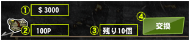

|
・地図画面の『サバイバル会場』と記載されているカフェが会場です。 ・ステージボタンをタップすると襲撃会場に入ることができます。 ・襲撃させたいゾンビを選択（最大6体）し、『全員で襲撃』ボタンをタップする。 ※チェックが付いているゾンビが襲撃します。一度、襲撃を開始すると後から変更ができません。ゾンビの追加もできません。 ・ゾンビは全滅するか全ての敵を倒すまで襲撃し続けます。 ・墓石／爆弾は使用できません。 ・襲撃中の毒でのゾンビの回復や復活はできません。 ・敵ゾンビは次から次へと湧いてきます。 ・敵を倒すごとにポイントを獲得します。ポイントは敵によって異なります。 ・全ての敵を倒すと次のステージに挑むことが出来るようになります。 ・ステージクリア時はゾンビの生還数に応じてボーナスポイントが得られます。 ・星が多いステージほど敵が多く出現し、生還ボーナス得点が高く設定されています。 ・襲撃中全滅しても獲得したポイントが得られます。 ・ポイントは累積で保存され、景品の交換に使用します。 ※本イベントではランキングはありません。 ・会場トップ画面の『ポイント交換』ボタンをタップしポイント交換画面に遷移します。 ・画面を上下にスワイプし、景品内容を確認することが出来ます。  ・景品には「①景品名」「②交換に必要な消費ポイント」「③景品残り数」を表示しています。 ・景品交換に必要なポイントを所持している場合『④交換』ボタンが表示されます。 ・『交換』を行うと確認画面後その景品を手に入れ、必要ポイントが所持ポイントから消費されます。 ・店やロッカーでのゾンビの所持数が一杯な場合、ゾンビの交換はできません。 ・同種のアンプルを９つ持っている場合、そのアンプルの交換はできません。 ・報酬はイベント期間中のみ受け取りが可能。 ・Wifiや3G/LTE回線で通信できない場合、イベントに参加することはできません。 ・不正プレイが発覚した場合はイベントに参加ができません。 ・時間設定を変更した場合、ペナルティが発生ししばらくの間イベント会場に入れません。  |